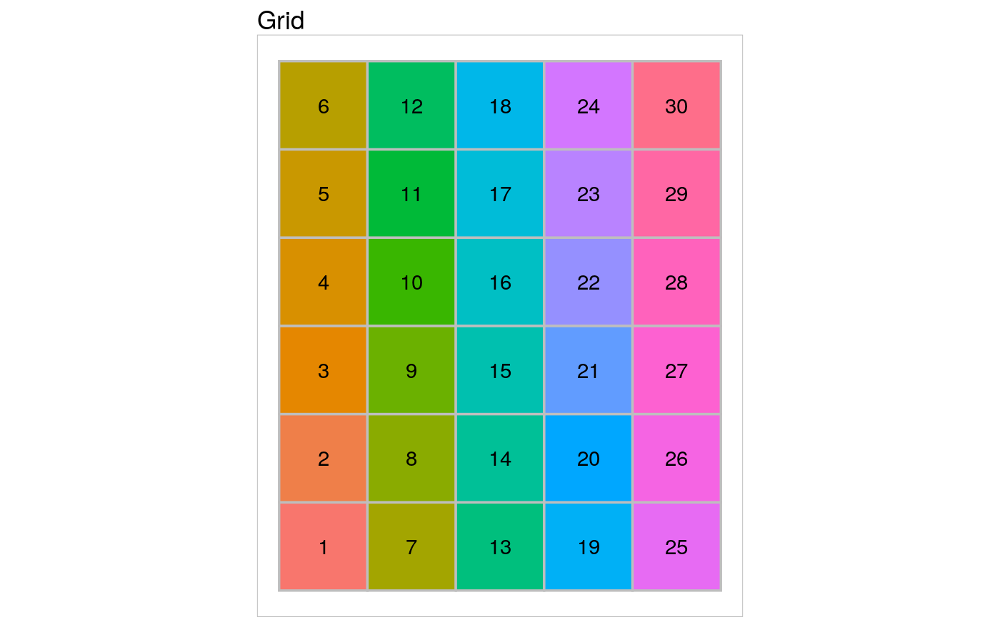
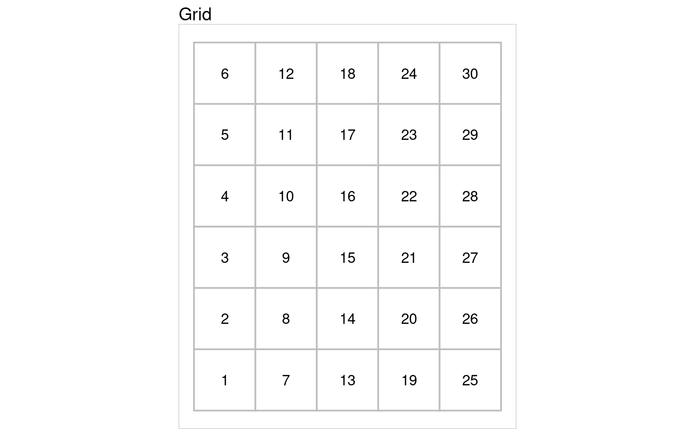

b-doc-grids.RmdObjects of class myGrid are made to depict a grid. To be able to create such objects, you have to load the package SOMbrero.
In this section, we will consider only the four basic functions that can be applied on a myGrid class object:
The initGrid function initializes a new myGrid object. It has 3 parameters:
dimension, which is a vector of two integers. The first one is the x dimension, the second one is the y dimension. The default dimensions are x=5 and y=5,topo, which is the topology choosen. The value of this argument must be one of these: square. The__default value__ is square.dist.type, which is the distance type. The default value is euclidean.The following R code initializes a new myGrid object of square topology, x dimension 5 and y dimension 6, and distance type maximum.
The myGrid object print function prints in the console the main features of the chosen object. The only argument is the object to be printed.
Considering the previously initialized grid, the print command is:
##
## Self-Organizing Map structure
##
## Features :
## topology : square
## x dimension : 5
## y dimension : 6
## distance type: maximumThe myGrid object summary function is quite simple. It only prints the class of the object and then calls the print function previously described. The only argument is the object to be summarized.
##
## Summary
##
## Class : myGrid
##
## Self-Organizing Map structure
##
## Features :
## topology : square
## x dimension : 5
## y dimension : 6
## distance type: maximumThe myGrid object plot function draws the squared area corresponding to the object, in a new graphical window. It has 2 parameters:

# generating colors from the rainbow() function
my.colors <- rainbow(5*6)
plot(my.first.grid, neuron.col=my.colors)